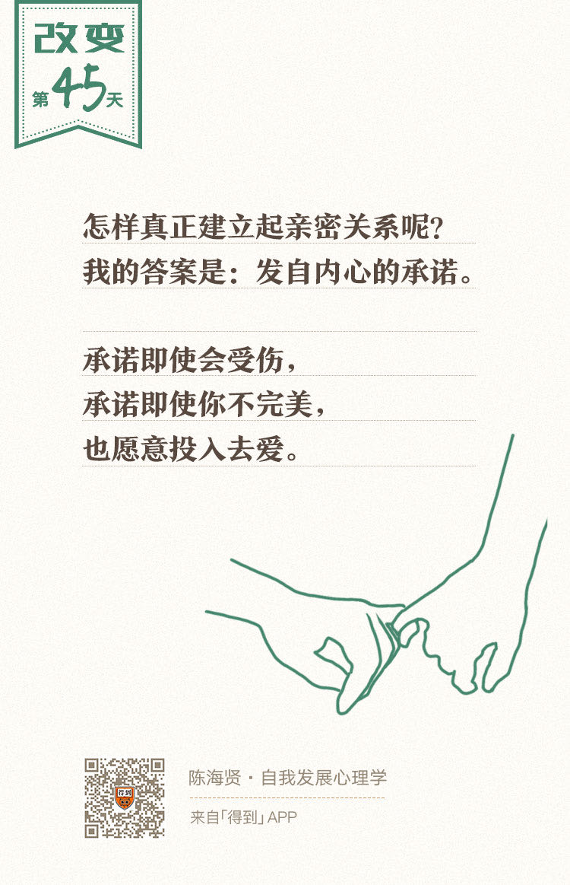

欢迎来到《自我发展心理学》。
你好，我是陈海贤。
结束了青春期以后，我们就进入了成年早期。成年早期通常指的是25岁到35岁之间。在这个阶段，你已经建立起了身份认同，有了一个相对稳定的自我。
可是这样就够了吗？
并不是。一个人总是很孤独的，你需要寻找爱人，跟爱人分享自我，来克服这种孤独。这就是成年早期的核心课题——建立亲密感。
建立亲密感是重要里程碑
亲密感的建立是自我发展的一个重要里程碑。这意味着，你的生活里不只有你自己，而且还有了别人。
从某种意义上，亲密关系的建立意味着，你的自我扩大了。你的爱人，就是你自我的延伸。有时候，这种扩展会弥补你的自我缺陷。
著名心理学家和哲学家詹姆斯（William James）年轻时有抑郁症。那时候，他思考了很多哲学问题，也去尝试过很多学科，想帮助自己从抑郁症中摆脱出来。
不过，最终把他从抑郁症中拯救出来的，不是这些哲学理念，而是人。
34岁的时候，他结婚了。这让他结束了过度的自我反省。他从稳定的感情中寻找到了一种从未有过的平和。
从此，他的学术生涯进入了一个爆发期，无论是他的思想，还是他的情绪，都变得更加成熟了。
你看，哲学家和心理学家也没法靠学问拯救自己，最后还是得靠亲密关系。
为什么亲密关系的建立对自我的影响会这么大？也许你会说，这是因为两个人了，可以相互有照顾。
这个说法有一定道理，可是，照顾什么呢？
在第三章我们曾经讲过，在关系里，你总是在扮演某个特定的角色。可是亲密关系中，你的角色是最特别的。亲密关系允许你暴露自己的脆弱，并把自己的脆弱托付给对方。
有人说，亲密关系，就是你能在一个人面前觉得很自在，不需要什么伪装，也不用担心他会怎么想。
当这些脆弱的部分能够在亲密关系中被接纳时，它们就不再是我们需要藏着掖着的秘密，不再是我们需要从自我中排斥的部分了。它会整合到我们的自我概念里，让我们更能接纳自己，也变得更完整。
这是对自我身份认同的深化，它是一种更深层次的照顾，这远远比身体上的照顾更重要。
自我中心的三个体现
可是，要获得这种亲密感，同样需要我们克服三个发展障碍，也就是这个阶段的三个自我中心倾向。
第一个障碍，是害怕不被接纳。
在建立亲密关系之前，几乎所有的人都会有这样的疑虑：
- 这段关系安全吗？
- 如果他看到我真实的样子，他还会爱我吗？
- 我会不会被抛弃？
建立亲密关系，意味着你要把自己托付出去，去依赖别人、信任别人。这同时也意味着，你给了别人伤害你的权力。
害怕这种依赖和托付，就是一种自我中心。
我有一个来访者，已经单身很多年了。
她一直有一个根深蒂固的信念：“不会有人真的喜欢我。”所以每次遇到新的异性，她都会想，自己会不会做错了什么？对方会不会讨厌她？这让她觉得很累。
在讲身份认同的时候，我们曾经讲过这种过度的自我关注，是身份认同不稳定时候的特征。
有一次咨询，我就让她回忆一下和异性交往的轻松点的片段。
她说大学的时候，有个师兄，人非常好，跟很多人都聊得来。有时候他们会一起吃饭，去操场散步。
我说：“那不是很好吗？说明你也能建立轻松的关系。”
她却说：“不是啊。每次散步回来，我都会想，这不是我好，是我那个师兄好。他只是为了照顾我，才跟我走走。如果知道我是一个什么样的人，他不会真的喜欢我的。”
你看，她在用这种方式扭曲她的经验，来维护“我就是没有人喜欢”的核心信念。而这个信念，又保护她远离人群，变成了建立亲密关系的障碍。
还有一个来访者跟我说：“我从来不敢在异性面前展示真正的自己。看起来我很体贴，别人也觉得我不错。可是我自己很累。我很怕自己在别人面前露出马脚，如果让别人看到我真实的一面，估计她就会离开我。”
真实的一面是什么呢？无非也就是“我脾气不好”“我没那么自信”之类。这样，他就把恋爱变成了一个无间道游戏。
一旦他觉得女孩子流露出了一些不满，他就会很恐慌，他会解读为这个女孩已经发现了他的真面目，并马上离开。这自然也很难建立亲密关系。
觉得自己有不能为人所知的另一面，几乎是每个人共有的秘密。而只有勇于去尝试，你才会发现，这个所谓的秘密，其实并没有那么危险。
阻碍这个阶段发展的第二个障碍，是害怕承诺。
亲密关系是排他的，这就意味着，一旦建立起亲密关系，你不能再去跟别人发展类似的关系了，无论你多欣赏对方，你的人生会因此失去一些可能性。
几乎每个亲密关系中的人，都会有这种疑虑：这就是我这辈子要在一起的人吗？他可是有这样那样的缺点啊。所以很多人都会恐婚。
害怕失去某种可能性，因此害怕承诺，是另一种自我中心。
我有一个来访者，和女友已经相处一段时间了，女朋友有要跟他结婚的意思，他很焦虑，苦思冥想该怎么办。
有一天，他去参加一个朋友聚会，遇到了一个很漂亮的姑娘，觉得自己豁然开朗，“对啊，我将来就是要找一个更漂亮的女朋友啊，所以现在不能结婚。”
“找个漂亮女朋友”的幻想，保留了承诺外的可能性，他的心反而安定了下来。女朋友让他去见家长，他也就去了，想着，反正我不结婚，反正我要找一个更漂亮的女朋友。
我就问他：“你到底是想找更漂亮的女朋友，所以不想结婚，还是单纯害怕跟现在的女朋友走得太近，害怕承诺呢？”
他想了想说：“都有吧。我现在还看看书，学学东西，玩玩游戏，万一我结婚了，我担心自己一点空间都没有了。而且，结婚牵扯到两个人的家庭，七大姑八大姨，我想想就害怕。”
他说的，除了害怕承诺，其实还提到获得亲密感的第三种障碍，那就是害怕被改变。
有人跟我说，单身久了，都不习惯再去找对象了。
一个人想吃什么，自己可以做，想玩什么，马上就可以玩了。如果有对象了，还要照顾对方的情绪，要找两个人都合适的活动，别说玩会受限制，连学习的时间都没有了。
他说的没错。亲密关系会挤压自我的空间，在一段亲密关系中，你一定会牺牲某些自主性。亲密关系会改变你的生活习惯、品位、情感表达。
还记得第三章关于关系的互补的课吗？
亲密关系是可能把你塑造成系统需要的样子。所以有些人觉得一个人更自由，也很能理解。
害怕不被接纳、害怕承诺和害怕改变自己，这三种不同形式的自我中心，成为我们建立亲密关系最大的障碍。
有时候，因为孤独，我们需要在一起，因为这些疑虑，我们又不能真的跟对方分享我们心里的秘密。所以作为一种折中的解决方案，我们就彼此戴着面具，一起配合着扮演一段亲密关系。
在这样的关系中，人们假装亲密，却各自孤单。有些人会出轨，有些人会物化对方，把关系变成一种利用、占有或者寻找刺激的途径。
可是内心的空虚和孤独会告诉他们，他们并没有完成人生的重要课题。
建立亲密关系的方法：发自内心的承诺
那么，怎么才能真的建立起亲密关系呢？
我的答案是：发自内心的承诺。
我承诺，即使错过可能性，即使你不完美，我也愿意去爱你。我愿意为我们俩的关系负责，我愿意接受关系的种种限制。
如果你有了这种承诺，看起来，亲密关系仍然会有种种限制，可是因为这种承诺本身是自主的，又让这种限制变成了一种自由选择，这时候限制就不再是限制了。
当然，这种承诺不是形式上的，而是发自内心的。
如果你完成了这种承诺，那你就完成了人生这个阶段的课题。你获得了一种宝贵的品质——爱。这种承诺本身，就是爱的形式。
也许你会说，我也想做这样的承诺，可是，我怎么才能找到这个对的人呢？
我想说，其实有时候我们没法建立亲密关系，不是因为你找不到对的人，而是你没法做出这样的承诺。承诺才是我们面对的最大的障碍。
有时候，你做了承诺以后，这个人就逐渐变成了那个对的人。这就是建立亲密关系的过程。
在这种承诺中，你也学会了深刻的托付、联结、责任和信任到底是怎么回事。你的自我，从一个人，变成了两个人。这会深化你对自我身份的认同。
我曾经问过一个家庭幸福的朋友，她是怎么克服建立亲密感这种疑虑的。
她说：“我也知道爱可能会带来伤害，可是，我也不能因为害怕伤害，就不去爱啊。”
当一个人这么说的时候，你就知道，她已经完成了建立亲密感的人生课题，并拥有了爱的能力。因为她的爱，不再受假想的伤害限制了。
当然，关系的承诺也不是一劳永逸的，有时候你确认过眼神，觉得那是对的人，也许过一段时间，你又觉得这不是对的人了。
可是，就算关系有变化，你在关系中获得的承诺和爱的能力，却不会轻易消失。
总结一下，这节课，我们讲了成年早期的发展任务——建立亲密关系。
首先，我们讲了建立亲密关系的三个障碍：
- 害怕被接纳；
- 害怕承诺；
- 害怕被改变。
这代表了这个阶段的自我中心。
之后，我们讲了建立亲密感的标志，那就是发自内心的承诺。建立亲密感意味着自我的发展又扩大了一步，自我从一个人变成了两个人。
下节课，我们会讲成年早期的另一个人生发展课题——建立职业认同。
我们下节课见。
